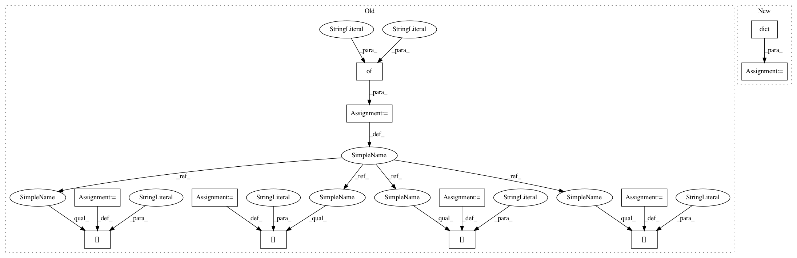

b99f8008ddce64d6389ca7fbda1638a8ded5ac74,scipy/spatial/tests/test_distance.py,TestCdist,test_cdist_out,#TestCdist#,581
Before Change
X1 = eo["cdist-X1"]
X2 = eo["cdist-X2"]
for metric in _METRICS_NAMES:
kwargs = {"p": None, "w": None, "V": None, "VI": None, "out": None}
if metric in ["minkowski", "wminkowski"]:
kwargs["p"] = 1.23
if metric == "wminkowski":
kwargs["w"] = 1.0 / X1.std(axis=0)
out1 = np.empty((10, 20), dtype=np.double)
Y1 = cdist(X1, X2, metric, **kwargs)
kwargs["out"] = out1
Y2 = cdist(X1, X2, metric, **kwargs)
// test is output is numerically correct
_assert_within_tol(Y1, Y2, eps, verbose > 2)
// test is distance matrix Y1 and out1 are the same object
assert_(Y2 is out1)
// test for incorrect shape
out2 = np.empty((9, 19), dtype=np.double)
kwargs["out"] = out2
assert_raises(ValueError, cdist, X1, X2, metric, **kwargs)
// test for C-contiguous order
out3 = np.empty((100, 200), dtype=np.double)[::10, ::10]
out4 = np.empty((10, 20), dtype=np.double, order="F")
kwargs["out"] = out3
assert_raises(ValueError, cdist, X1, X2, metric, **kwargs)
kwargs["out"] = out4
assert_raises(ValueError, cdist, X1, X2, metric, **kwargs)
// test for incorrect dtype
out5 = np.empty((10, 20), dtype=np.int64)
kwargs["out"] = out5
assert_raises(ValueError, cdist, X1, X2, metric, **kwargs)
class TestPdist(object):
After Change
X2 = eo["cdist-X2"]
out_r, out_c = X1.shape[0], X2.shape[0]
for metric in _METRICS_NAMES:
kwargs = dict()
if metric in ["minkowski", "wminkowski"]:
kwargs["p"] = 1.23
if metric == "wminkowski":
kwargs["w"] = 1.0 / X1.std(axis=0)
In pattern: SUPERPATTERN
Frequency: 3
Non-data size: 12
Instances
Project Name: scipy/scipy
Commit Name: b99f8008ddce64d6389ca7fbda1638a8ded5ac74
Time: 2017-09-14
Author: apbard@users.noreply.github.com
File Name: scipy/spatial/tests/test_distance.py
Class Name: TestCdist
Method Name: test_cdist_out
Project Name: scipy/scipy
Commit Name: b99f8008ddce64d6389ca7fbda1638a8ded5ac74
Time: 2017-09-14
Author: apbard@users.noreply.github.com
File Name: scipy/spatial/tests/test_distance.py
Class Name: TestCdist
Method Name: test_cdist_out
Project Name: scipy/scipy
Commit Name: b99f8008ddce64d6389ca7fbda1638a8ded5ac74
Time: 2017-09-14
Author: apbard@users.noreply.github.com
File Name: scipy/spatial/tests/test_distance.py
Class Name: TestPdist
Method Name: test_pdist_out
Project Name: merenlab/anvio
Commit Name: bb21b3314c57ec4208af8eed8041091cc51ec68a
Time: 2020-02-26
Author: kiefl.evan@gmail.com
File Name: anvio/profiler.py
Class Name: BAMProfiler
Method Name: generate_variabile_codons_table